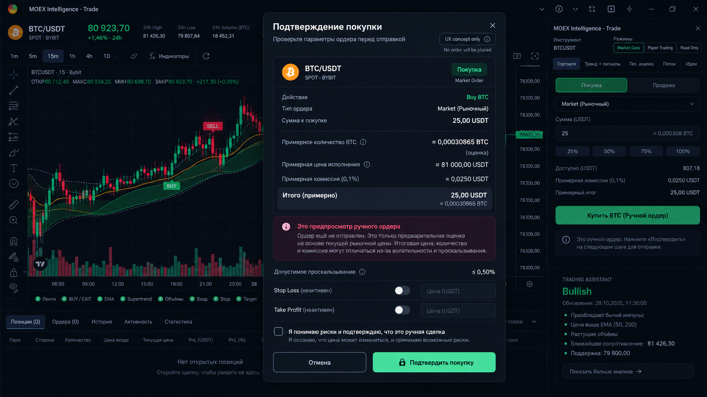

Regime AI
Какой сейчас рынок?Тренд, боковик, волатильность, ликвидность и смена режима.
Сохранённые визуальные ориентиры, графики и принципы. Все прогнозные значения ниже — иллюстративны, не рыночные сигналы.
Настоящая история слева, сценарии будущего и растущая неопределённость справа. Визуальная граница нужна, чтобы никто не спутал прогноз с фактом.
Контроли: Forecast On/Off · Horizon 1/4/8/12 candles · Interval/Quantiles · Show signals · Freeze issued forecast · Forecast history.
Тренд, боковик, волатильность, ликвидность и смена режима.
Прогнозные распределения, диапазоны, горизонты и измеренная калибровка.
Комиссии, спред, риск, актуальность входа. Право сказать No Trade.
До будущего автономного режима — только ручное подтверждение реальных заявок. AI не отправляет их напрямую.
MANUAL FIRSTПараллельный исход: REJECTED BY RISK. Подтверждённые сигналы нельзя сдвигать на более ранние свечи. Исторические маркеры не должны выдавать будущую информацию.
Референс: BTC/USDT, 25 USDT, рыночная заявка. Перед финальной отправкой пользователь проверяет цену, количество, комиссии, проскальзывание и риск. Фактическая заявка не исполняется этим макетом.

Ключевой эталон для Astra: тёмный профессиональный терминал, наглядный двухшаговый preview, ни одного признака якобы выполненной сделки.
Kill switch блокирует новые заявки; закрытие позиций и отмена открытых ордеров — отдельно.
Биржевой баланс, позиции и статусы исполнения. Одна подтверждённая заявка → контроль рисков → шлюз API → реальный биржевой fill.
В текущей версии уже работает полезная основа: крупный график, Trend Ribbon, маркеры BUY/EXIT, контрольная панель и анализ. Улучшаем её без замены инвестиционного модуля MOEX.
Критические баги, свежесть котировок, ранний сигнал и жизненный цикл.
Forecast, Shadow Mode, оценка статистического преимущества, Paper и Demo.
Надёжный подтверждаемый ордер, read-only/торговые ключи, Security Center.
v1.1+: автономная аналитическая/демонстрационная торговля при исследовательской готовности. Не включать реальное автономное исполнение по умолчанию. Сроки условны.
Сопроводительная спецификация: README.md. Документ предназначен для продолжения работы над проектом и передачи Astra. Макеты и диаграммы не являются действительными прогнозами или результатами торговли.